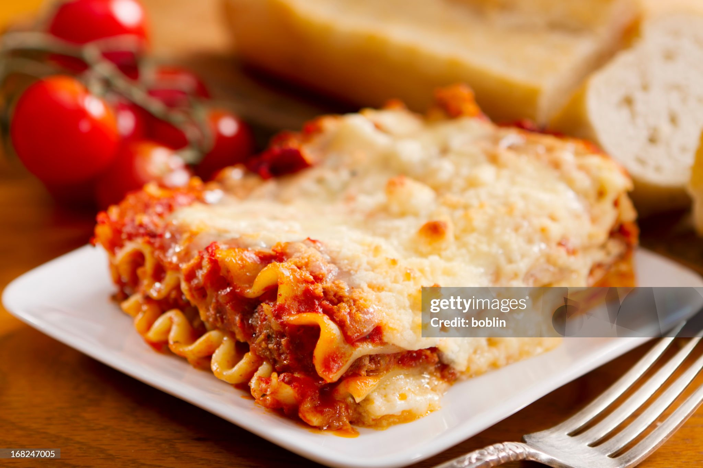

Lasagna

Description
In this classic lasagna recipe, sheets of pasta are layered with a
cheesy filling, a rich meaty tomato sauce, and more cheese and then
baked until bubbly and browned.
Ingredients
- 12 lasagna noodles uncooked
- 4 cups shredded mozzarella cheese divided
- 1/2 cup shredded Parmesan cheese shredded and divided
- 3/4 teaspoon salt more to taste
Tomato Sauce
- 1/2 pound lean ground beef
- 1/2 pound Italian sausage
- 1 yellow onion diced
- 2 cloves garlic, minced
- 36 ounces pasta sauce
- 2 tablespoons tomato paste
- 1 teaspoon Italian seasoning
Cheese Mixture
2 cups ricotta cheese or cottage cheese
1/4 cup fresh parsley, chopped
1 large egg, beaten
Steps
- Preheat the oven to 350°F. Bring a large pot
of salted water to a boil. Add the lasagna noodles
and cook until al dente (firm) according to package
directions. Drain, rinse under cold water, and set
aside.
- Meanwhile, in a large skillet or Dutch oven, brown
the beef, sausage, onion, and garlic over medium-high
heat until no pink remains. Drain any fat.
- Stir in the pasta sauce, tomato paste, Italian
seasoning, 1/2 teaspoon of salt, and 1/4 teaspoon of
black pepper. Simmer uncovered over medium heat for 5
minutes or until slightly thickened. Taste and season
with additional salt if desired.
- In a separate medium bowl, combine 1 1/2 cups
mozzarella cheese, 1/4 cup parmesan cheese, ricotta,
parsley, egg, and 1/4 teaspoon salt.
- Spread 1 cup of the meat sauce in a 9x13 pan or
casserole dish. Top it with 3 lasagna noodles. Layer
with 1/3 of the ricotta cheese mixture and 1 cup meat
sauce. Repeat twice more. Finish with 3 noodles topped
with remaining sauce.
- Cover with foil and bake for 45 minutes
- Rest for at least 15 minutes before cutting